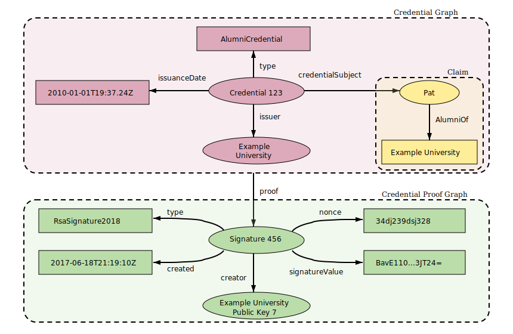
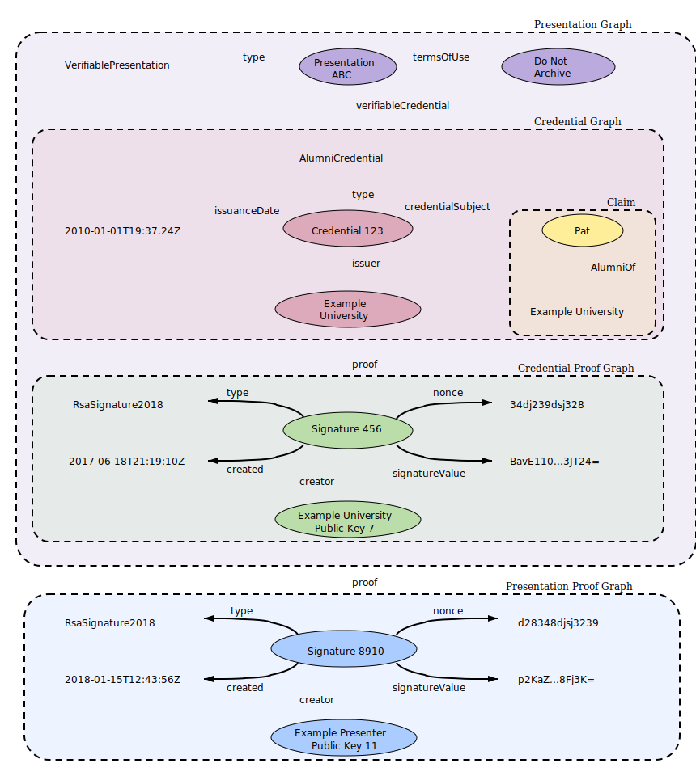

Credentials are a part of our daily lives; driver's licenses are used to
assert that we are capable of operating a motor vehicle, university degrees
can be used to assert our level of education, and government-issued passports
enable us to travel between countries. This specification provides a mechanism
to express these sorts of credentials on the Web in a way that is
cryptographically secure, privacy respecting, and machine verifiable.
Credentials are a part of our daily lives; driver's licenses are used to
assert that we are capable of operating a motor vehicle, university degrees
can be used to assert our level of education, and government-issued passports
enable us to travel between countries. These credentials provide
benefits to us when used in the physical world, but their use on the Web
continues to be elusive.
Currently it is difficult to express education qualifications, healthcare
data, financial account details, and other sorts of third-party verified
machine-readable personal information on the Web. The difficulty of expressing
digital credentials on the Web makes it challenging to receive the same
benefits through the Web that physical credentials provide us in the
physical world.
This specification provides a standard way to express credentials on the
Web in a way that is cryptographically secure, privacy respecting, and
machine verifiable.
For those unfamiliar with the concepts related to
verifiable credentials, the following sections provide an overview of:
While this specification attempts to improve the ease of expressing digital
credentials, it also attempts to balance this goal with a number of
privacy-preserving goals. The persistence of digital information, and the ease
with which disparate sources of digital data can be collected and correlated,
comprise a privacy concern that the use of verifiable and easily
machine-readable credentials threatens to make worse. This document
outlines and attempts to address a number of these issues in Section
. Examples of how to use this data model
using privacy-enhancing technologies, such as zero-knowledge proofs, are also
provided throughout this document.
Ecosystem Overview
This section describes the roles of the core actors and the relationships
between them in an ecosystem where verifiable credentials are expected
to be useful. A role is an abstraction that might be implemented in many
different ways. The separation of roles suggests likely interfaces and
protocols for standardization. The following roles are introduced in this
specification:
A role an entity might perform by possessing one or more
verifiable credentials and generating presentations from them.
Example holders include students, employees, and customers.
A role an entity might perform by creating a
verifiable credential, associating it with a specific subject,
and transmitting it to a holder. Example issuers include
corporations, non-profit organizations, trade associations, governments, and
individuals.
A role an entity might perform by having one or more
verifiable credentials asserted about it. Example subjects include
human beings, animals, and things. Whilst in many cases the holder of
a verifiable credential will be the subject,
in certain cases it will not be. For example, a parent (the holder) may hold
the verifiable credentials of a child (the subject), or a pet lover (the holder)
may hold the verifiable credentials of its pet (the subject). The Subject-Holder
Relationships section in the Advanced
Concepts deals with these special cases.
A role an entity might perform by requesting and receiving a
verifiable presentation that proves the holder possesses the
required verifiable credentials with certain characteristics. Example
verifiers include employers, security personnel, and websites.
A role a system might perform by mediating the creation and verification of
identifiers, keys, and other relevant data, such as
verifiable credential schemas and revocation registries, which might be
required to use verifiable credentials. Some configurations might
require correlatable identifiers for subjects. Example verifiable data
registries include trusted databases, decentralized databases, government ID
databases, and distributed ledgers. Often there is more than one type of
verifiable data registry utilized in an ecosystem.
The roles and information flows forming the basis for this specification.
The ecosystem above is provided as an example to ground the rest of the
concepts in this specification. Other ecosystems exist, such as protected
environments or proprietary systems, where verifiable credentials also
provide benefit.
Use Cases and Requirements
The Verifiable Credentials Use Cases [[VC-USECASES]] document outlines a number
of key topics that readers might find useful, including:
A more thorough explanation of the
roles
introduced above
The
needs
identified in market verticals, such as education, finance, healthcare, retail,
professional licensing, and government
Common
tasks
performed by the roles in the ecosystem, as well as their associated
requirements
As a result of documenting and analyzing the use cases document, a number of
desirable ecosystem characteristics were identified for this specification,
specifically:
There are
other requirements
listed in the Verifiable Credentials Use Cases
document that may or may not be aligned with the requirements listed above.
The VCWG will be ensuring alignment of the list of requirements from both
documents over time and will most likely move the list of requirements to a
single document.
Terminology
Core Data Model
The following sections outline core data model concepts, such as
claims, credentials, and presentations, that form the
foundation of this specification.
Claims
A claim is a statement about a subject. A subject is an
entity about which claims can be made. Claims are
expressed using
subject-property-value
relationships.
The basic structure of a claim.
The data model for claims described above is powerful and can be used
to express a large variety of statements. For example, whether or not someone
graduated from a particular university can be expressed as shown below.
A basic claim expressing that Pat is an alumni of "Example University".
Individual claims can be merged together to express a graph of
information about a subject. The example below extends the previous
claim by adding the claims that Pat knows Sam and that Sam is
employed as a professor.
Multiple claims can be combined to express a graph of information.
To this point, the concepts of a claim and a graph of information
are introduced. To be able to trust claims, more information must be
added.
Credentials
A credential is a set of one or more claims made by the same
entity. Credentials might also include an identifier and
metadata to describe properties of the credential, such as the
issuer, the expiry date and time, a representative image, a public key
to use for verification purposes, the revocation mechanism, and so on.
The metadata might be signed by the issuer. A
verifiable credential is a set of tamper-evident claims and
metadata that cryptographically prove who issued it.
Basic components of a verifiable credential.
Examples of verifiable credentials include digital employee
identification cards, digital birth certificates, and digital educational
certificates.
Credential identifiers are often used to identify specific instances
of a credential. These identifiers can also be used for correlation. A
holder wanting to minimize correlation is advised to use a selective
disclosure scheme that does not reveal the credential identifier.
above shows the basic components of a
verifiable credential, but abstracts the details about how claims
are organized into information graphs, which are then organized into
verifiable credentials. below shows a
more complete depiction of a verifiable credential,
which is normally composed of at least two information graphs. The first
graph expresses the credential itself, which contains
credential metadata and
claims. The second
graph expresses the
digital proof, which is
usually a digital signature.

Information graphs associated with a basic verifiable credential.
It is possible to have a credential, such as a marriage certificate,
containing multiple claims about different subjects that are
not required to be related.
Presentations
Enhancing privacy is a key design feature of this specification. Therefore, it
is important for entities using this technology to be able to
express only the portions of their persona that are appropriate for a given
situation. The expression of a subset of one's persona is called a
verifiable presentation. Examples of different personas include a
person's professional persona, their online gaming persona, their
family persona, or an incognito persona.
The data in a presentation is often about the same subject, but
was issued by multiple issuers. The aggregation of this information
typically expresses an aspect of a person, organization, or entity.
Basic components of a verifiable presentation.
above shows the components of a
verifiable presentation, but abstracts the details about how
verifiable credentials are organized into information graphs,
which are then organized into verifiable presentations.
below shows a more complete depiction of a
verifiable presentation, which is normally composed of at least four
information graphs. The first graph expresses the
presentation itself, which contains
presentation metadata.
The verifiablePresentation property in the graph refers to
one or more verifiable credentials (each a self-contained graph),
which in turn contains
credential metadata and
claims.
The third graph expresses the
credential graph proof,
which is usually a digital signature. The fourth graph expresses the
presentation graph proof,
which is usually a digital signature.

Information graphs associated with a basic verifiable presentation.
It is possible to have a presentation, such as a business persona,
that draws on multiple credentials about different subjects
that are often, but not required to be, related.
Have been transmitted in a way clearly establishing that the issuer
generated the credential and that the credential was not
tampered with in transit or storage. This trust could be weakened depending
on the risk assessment of the verifier.
The holder trusts the repository to store the credentials
securely, to not release them to anyone other than the holder, and to
not corrupt or lose them while they are in its care.
This trust model differentiates itself from other trust models by ensuring
the:
By decoupling the trust between the identity provider and the
relying party a more flexible and dynamic trust model is created
such that market competition and customer choice is increased.
Readers that would like to learn more about how this trust model interacts
with various threat models studied by the Working Group are urged to read
the Verifiable Credentials Use Cases Document [[VC-USECASES]].
The data model detailed in this specification does not imply a transitive trust
model, such as that provided by more traditional Certificate Authority trust
models. In the Verifiable Credentials Data Model, a verifier either
directly trusts or does not trust an issuer. While it is possible to
build transitive trust models using the Verifiable Credentials Data Model,
implementers are urged to
learn about the security weaknesses
introduced by
broadly delegating trust
in the manner adopted by Certificate Authority systems.
A conforming document is any concrete expression of the data model
that complies with the normative statements in this specification.
Specifically, all relevant normative statements in
,
, and
of this document MUST be enforced.
A conforming processor is any algorithm realized as software and/or
hardware that generates or consumes a conforming document as
described by this specification and also enforces all relevant normative
statements in the section of this document
when performing verification.
This specification makes no normative statements with regard to the
conformance of roles in the ecosystem such as issuers, holders,
or verifiers because the conformance of ecosystem roles are highly
application, use case, and market vertical specific.
Basic Concepts
This section introduces some basic concepts for the specification, in
preparation for Section later in the
document.
Contexts
When two software systems need to exchange data, they must use terminology and
a protocol that both systems understand. As an analogy, consider how two
people communicate. Both people must use the same language and the words they
use must mean the same thing to each other. This specification uses the
@contextproperty to express the context of a conversation.
@context
The value of the @contextproperty MUST be one or more
URIs, where the value of the first URI is
https://www.w3.org/2018/credentials/v1. If more than one URI is
provided, the URIs MUST be interpreted as an ordered set. It is RECOMMENDED
that dereferencing the URIs results in a document containing machine-readable
information about the context.
The example above uses the base context URI
(https://www.w3.org/2018/credentials/v1) to establish that the
conversation is about a verifiable credential. The second
URI (https://example.com/examples/v1) establishes that the
conversation is about examples.
This document uses the examples context URI
(https://example.com/examples/v1) for the purposes of
demonstrating examples. The examples context URI MUST NOT be used for any
other purpose, such as in pilot or production systems.
The data available at https://www.w3.org/2018/credentials/v1 is a
static document that is never updated and SHOULD be downloaded and cached. The
associated human-readable vocabulary document for the Verifiable Credentials
Data Model is available at
https://www.w3.org/2018/credentials.
This concept is further expanded on in Section .
Identifiers
When expressing statements about a specific thing, such as a person, product,
or organization, it is often useful to use some kind of identifier so that
others can express statements about the same thing. Identifiers that others
are expected to use when expressing statements about a specific thing MUST be
expressed using the idproperty.
Developers should remember that identifiers might be harmful in scenarios
where pseudonymity is required. Developers are encouraged to read
Section carefully when considering
such scenarios. Where privacy is a strong consideration, the idproperty MAY be omitted.
id
The value of the idproperty MUST be a single URI. It is
RECOMMENDED that dereferencing the URI results in a document containing
machine-readable information about the identifier.
The example above uses two types of identifiers. The first identifier is for
the credential and uses an HTTP-based URL. The second identifier is for
the subject of the credential (the thing the claims are
about) and uses a decentralized identifier, also known as a DID.
As of this publication, DIDs are a new type of identifier that are not
necessary for verifiable credentials to be useful. Specifically,
verifiable credentials do not depend on DIDs and DIDs do
not depend on verifiable credentials. However, it is expected that many
verifiable credentials will use DIDs and that software libraries
implementing this specification will probably need to resolve DIDs.
DID-based URLs are used for expressing identifiers associated with
subjects, issuers, holders, credential status lists,
cryptographic keys, and other machine-readable information that is associated
with a verifiable credential.
Types
Software systems that process the kinds of objects specified in this document
use type information to determine whether or not a provided credential
or presentation is appropriate. Type information SHOULD be expressed
using the typeproperty.
type
The value of the typeproperty MUST be, or map to, one or
more URIs. If more than one URI is provided, the URIs MUST be interpreted as an
unordered set. Syntactic conveniences, such as JSON-LD terms, SHOULD be used
to ease developer usage. It is RECOMMENDED that dereferencing
the URIs results in a document containing machine-readable information about
the type.
A valid evidence type. For example, "type": "DocumentVerification2018"
All credentials, presentations, and encapsulated objects MUST
specify, or be associated with, additional more narrow types (like
UniversityDegreeCredential, for example) so software systems can
process this additional information.
When processing encapsulated objects defined in this specification, (for
example, objects associated with the credentialSubject object
or deeply nested therein), software systems SHOULD use the type
information specified in encapsulating objects higher in the hierarchy.
Specifically, an encapsulating object, such as credential, SHOULD
convey the associated object types so that verifiers can quickly
determine the contents of an associated object based on the encapsulating
object type.
For example, a credential object with the type of
UniversityDegreeCredential, signals to a verifier that
the object associated with the credentialSubject property contains
the identifier for the:
This enables implementers to rely on values associated with the
type property for verification purposes. The expectation of
types and their associated properties should be documented in at least a
human-readable specification, and preferably, in an additional machine-readable
representation.
The type system for the Verifiable Credentials Data Model is the same as
for [[JSON-LD]] and is detailed in
Section 5.4: Specifying the Type
and
Section 8: JSON-LD Grammar.
When using a JSON-LD context (see Section ),
this specification aliases the @type keyword to type
to make the JSON-LD documents more easily understood. While application
developers and document authors do not need to understand the specifics of the
JSON-LD type system, implementers of this specification who want to support
interoperable extensibility, do.
Issuer
Issuer information can be expressed using the following
properties:
issuer
The value of the issuerproperty MUST be a URI. It is
RECOMMENDED that dereferencing the URI results in a document containing
machine-readable information about the issuer that can be used to verify
the information expressed in the credential.
issuanceDate
The value of the issuanceDateproperty MUST be a string
value of an [[!ISO8601]] combined date and time string representing the date
and time the credential was issued. Note that this date represents the
earliest date when the information associated with the
credentialSubjectproperty became valid.
The method used for a mathematical proof varies by representation language and
the technology used. For example, if digital signatures are used for the
proof mechanism, the proofproperty is expected to have a
value that is a set of name-value pairs including at least a signature, a
reference to the signing entity, and a representation of the signing date.
The group is currently discussing various alignments with the JOSE stack,
specifically JWS and JWK.
Expiration
Expiration information for a credential MAY be provided by adding
the following property:
expirationDate
If specified, the value of the expirationDateproperty MUST
be a string value of an [[!ISO8601]] combined date and time string representing
the date and time the credential ceases to be valid.
Information about the current status of a verifiable credential, such
as whether it is suspended or revoked, MAY be provided using the
credentialStatusproperty.
credentialStatus
If specified, the value of the credentialStatusproperty
MUST include the:
typeproperty, which expresses the credential status
type (also referred to as the credential status scheme), which MUST
provide enough information to determine the current status of the
credential (for example, suspended or revoked).
The precise contents of the credential status information is determined
by the specific credentialStatustype definition, and
varies depending on factors such as whether it is simple to implement or if it
is privacy-enhancing.
Defining the data model, formats, and protocols for status schemes are out of
scope for this specification. A status scheme registry [[VC-STATUS-REGISTRY]]
exists for implementers who want to implement credential
status checking.
The contents of the verifiableCredentialproperty shown
above are verifiable credentials as described by this specification. The
contents of the proofproperty are proofs as described by the
Linked Data Proofs [[LD-PROOFS]] specification. The idproperty is optional and MAY be used to provide a unique identifier for
the presentation. The value associated with the id property MUST
be a URI.
Some zero-knowledge cryptography schemes might enable holders to
indirectly prove they hold a credential without revealing the
credential itself. In these schemes, the original attribute, such as
date of birth, might be translated into another value, such as "over the age
of 15", which is cryptographically asserted such that a verifier can
trust the value if they trust the issuer.
We are currently working on an example of a ZKP-style verifiable presentation
that contains derived data instead of directly embedded verifiable credentials.
If a presentation supports derived predicates, a claim
about birthdate in a credential can become the basis of proof that at a
given point in time, the age of a subject did or will fall within a
specified range. Selective disclosure schemes using zero-knowledge proofs
can use claims expressed in this model to prove additional statements
about those claims. For example, a claim specifying a
subject's date of birth can be used as a predicate to prove the
subject's age is within a given range, and therefore prove the
subject qualifies for age-related discounts, without actually revealing
the subject's birthdate. The holder has the flexibility to use
the claim in any way that is applicable to the desired
presentation.
A basic claim expressing that Pat's date of birth is 2010-01-01T19:23:24Z. Date
encoding would be determined by the schema.
Advanced Concepts
Building on the concepts introduced in Section ,
this section explores more complex topics about verifiable credentials.
Extensibility
One of the goals of the Verifiable Credentials Data Model is to enable
permissionless innovation. To achieve this, the data model needs to be
extensible in a number of different ways. The data model is required to:
Model complex multi-entity relationships through the use of a
graph-based data model.
Extend the machine-readable vocabularies used to describe information in the
data model, without the use of a centralized system for doing so, through the
use of [[LINKED-DATA]].
Support multiple types of cryptographic proof formats through the use of
Linked Data Proofs [[LD-PROOFS]], Linked Data Signatures [[LD-SIGNATURES]],
and a variety of signature suites.
Provide all of the extensibility mechanisms outlined above in a data format
that is popular with software developers and web page authors, and is enabled
through the use of [[!JSON-LD]].
The requirement to support multiple types of machine-readable data formats e.g., JWT is currently not supported.
This approach to data modelling is often called an
open world assumption, meaning that any entity can say anything about
any other entity. While this approach seems to conflict with building simple
and predictable software systems, balancing extensibility with program
correctness is always more challenging with an open world assumption than with
closed software systems.
The rest of this section describes, through a series of examples, how both
extensibility and program correctness are achieved.
This verifiable credential states that the entity associated with
did:example:abcdef1234567 has a name
with a value of Jane Doe.
Now let us assume that a developer wants to extend the
verifiable credential to store two additional pieces of information: an
internal corporate reference number, and Jane's favorite food.
The first thing to do is to create a JSON-LD context containing two new terms,
as shown below.
After this JSON-LD context is created, the developer publishes it somewhere
so it is accessible to verifiers who will be processing the
verifiable credential. Assuming the above JSON-LD context is published
at https://example.com/contexts/mycontext.jsonld, we can extend
this example by including the context and adding the new properties and credential
type to the verifiable credential.
This example demonstrates extending the Verifiable Credentials Data Model in a
permissionless and decentralized way. The mechanism shown also ensures that
verifiable credentials created in this way provide a mechanism to
prevent namespace conflicts and semantic ambiguity.
A dynamic extensibility model such as this does increase the implementation
burden. Software written for such a system has to determine whether
verifiable credentials with extensions are acceptable based on the
risk profile of the application. Some applications might accept only
certain extensions while highly secure environments might not accept any
extensions. These decisions are up to the developers of these
applications and are specifically not the domain of this specification.
Developers are urged to ensure that extension JSON-LD contexts are highly
available. Implementations that cannot fetch a context will produce an error.
Strategies for ensuring that extension JSON-LD contexts are always available
include using content-addressed URLs for contexts, bundling context documents
with implementations, or enabling aggressive caching of contexts.
Semantic Interoperability
This specification endeavors to enable both the JSON and JSON-LD syntaxes to
be semantically compatible with one another without the JSON implementations
needing to process the documents as JSON-LD. To achieve this, the
specification imposes the following additional restrictions on both syntaxes:
JSON-based processors MUST process the @contextproperty,
ensuring the expected values exist in the expected order for the
credential type being processed. It is advised that the expected order
of values of the @contextproperty should be defined by
at least a human-readable extension specification and preferably by a
machine-readable specification as well.
JSON-LD-based processors MUST produce an error when a JSON-LD context
redefines any term in the
active context.
To avoid the possibility of accidentally overriding terms, developers are urged
to scope their extensions. For example, the following extension scopes the
new favoriteFood term so that it can only be used within the
credentialSubjectproperty.
Data schemas are useful when enforcing a specific structure on a given
collection of data. There are at least two types of data schemas that this
specification considers:
Data verification schemas, which are used to verify that the structure and
contents of a verifiable credential conform to a published schema.
Data encoding schemas, which are used to map the contents of a
verifiable credential to an alternative representation format, such as a
binary format used in a zero-knowledge proof.
The expression of a data schema can be performed using the following
property:
credentialSchema
The value of the credentialSchemaproperty MUST be one or
more data schemas that provide verifiers with enough information to
determine if the provided data conforms to the provided schema. Each
credentialSchema MUST specify its
type (for example, JsonSchemaValidator2018), and an
idproperty that MUST be a URI identifying the schema file.
The precise contents of each data schema is determined by the specific type
definition.
In the example above, the issuer is specifying a
credentialSchema, which points to a [[?JSON-SCHEMA]] file that can be
used by a verifier to determine if the verifiable credential is
well formed.
The group is still exploring how to utilize this feature for ZKPs and will
most likely adjust this section based on implementer feedback.
Data schemas can also be used to specify mappings to other binary formats,
such as those used to perform zero-knowledge proofs.
In the example above, the issuer is specifying a
credentialSchema, which points to a zero-knowledge packed binary
data format that is capable of transforming the input data into a format,
which can then be used by a verifier to determine if the
proof provided with the verifiable credential is valid.
Refreshing
It is useful for systems to enable the manual or automatic refresh of a
expiredverifiable credential. This
specification enables an issuer to include a link to a refresh service.
A refresh service can be expressed using the following property:
refreshService
The value of the refreshServiceproperty MUST be one or
more refresh services that provides enough information to the recipient's
software such that the recipient can refresh the credential. Each
refreshService value MUST specify its type
(for example, ManualRefreshService2018), and its URL as the
value of id. The precise content of each refresh service
is determined by the specific refreshServicetype
definition.
In the example above, the issuer specifies a manual
refreshService that can be used by directing the holder or the
verifierto
https://example.edu/refresh/3732.
Mode of Operation
Section provided an overview of the
verifiable credential ecosystem. This section provides more detail about
how the ecosystem is envisaged to operate, as follows:
The order of the following steps is not fixed and some steps might be repeated.
The verifier either performs the requested action or rejects the
request.
This specification does not define any protocol for transfering
verifiable credentials or verifiable presentations, but assuming
other specifications do specify how they are transferred between entities, then
this Verifiable Credential Data Model is:
Directly applicable to steps 2, 3, 4, 5, and 6.
Not sufficient on its own for steps 1, 7, and 8 because an authorization
framework is needed as well.
In particular, Sections and
specify how a verifier can
determine:
Terms of use MAY be expressed using the following property:
termsOfUse
If specified, the value of the termsOfUseproperty MUST
specify one or more terms of use policies under which the creator issued the
credential or presentation. If the recipient (a holder or
verifier) is not willing to adhere to the specified terms of use, then
they do so on their own responsibility and might incur legal liability if they
violate the stated terms of use. Each termsOfUse value MUST
specify its type, for example, IssuerPolicy, and
optionally, its instance id. The precise contents of each term of
use is determined by the specific termsOfUsetype
definition.
The group is currently exploring a variety of ways of expressing the terms of
use associated with a Verifiable Credential, namely, the
Open Digital Rights Language.
A related initiative is the one at Customer Commons.
In the example above, the holder (assigner), who is also the
subject, expressed a Term of Use prohibiting the verifier
(assignee) (https://wineonline.example.org) from using the
information provided to correlate the holder / subject using a
third-party service. If the verifier were to use a third-party service
for correlation, they would violate the terms under which the holder created
the presentation.
For example, an issuer might check physical documentation provided by the
subject or might perform a set of background checks before issuing the
credential. In certain scenarios, this information is useful to the verifier
when determining the risk associated with relying on a given credential.
Evidence information can be expressed using the following property:
evidence
The value of the evidenceproperty MUST be one or more
evidence schemes providing enough information to a verifier to determine
whether the evidence gathered by the issuer meets its requirements for issuing a
credential. The precise content of each evidence scheme is determined by
the specific evidencetype definition.
The group is currently determining whether or not they should publish a
very simple scheme for evidence as a part of this specification.
The group is currently discussing how attachments and references to
non-credential data are supported by the specification.
The group is currently discussing how attachments and references to
credentials are supported by the specification.
The evidenceproperty provides different and complimentary
information to the proofproperty. The evidenceproperty is used to express
supporting information, such as documentary evidence, related to the integrity
of the credential. In contrast, the proofproperty
is used to express machine-verifiable mathematical proofs related to the
authenticity of the issuer and integrity of the credential.
Zero-Knowledge Proofs
A zero-knowledge proof is a cryptographic method where an entity can prove
to another entity that they know a certain value without disclosing the
actual value. A real world example is proving that an accredited university
has granted a degree to you without revealing your identity or any other
personally identifiable information contained on the degree.
This specification provides a data model that supports zero-knowledge proof mechanisms.
The examples below highlight how the data model may be utilized to issue,
present, and verify zero-knowledge verifiable credentials.
The first stage of utilizing zero-knowledge verifiable credentials
is for the issuer to issue a verifiable credential in a manner
that enables the holder to present the information to a verifier
in a privacy-enhancing manner. There are two requirements that are required of
most verifiable credentials when they are to be used in
zero-knowledge systems:
The verifiable credential MUST contain a credential definition that
will be used by all parties to perform various zero-knowledge based
cryptographic operations.
The following example describes one way that a verifiable credential
can express the information needed by a Camenisch-Lysyanskaya Zero-Knowledge
Proof system, also known as CL Signatures.
The example above provides the credential definition by using the
credentialSchemaproperty and a specific proof that is
usable in the Camenisch-Lysyanskaya Zero-Knowledge Proof system.
All derived proofs in verifiable credentials MUST NOT leak information
that would enable the verifier to correlate the holder presenting
the credential.
Important details regarding the format for the credential definition and
of the proofs are omitted on purpose because they are outside of the scope of
this document. The purpose of this section is to guide implementers wanting to
extend verifiable credentials and verifiable presentations to
support zero-knowledge proof systems.
Disputes
There are at least two different cases to consider for an entity
wanting to dispute a credential issued by an issuer:
A subject disputes a claim made by the issuer. For example, the
addressproperty is incorrect or out of date.
An entity disputes a potentially false claim made by the issuer
about a different subject. For example, an imposter claims the social
security number for an entity.
Only the subject of a verifiable credential is entitled to issue
a DisputeCredential. A DisputeCredential issued by
anyone other than the subject should be disregarded by the
verifier, unless the verifier has some other way of determining
the truth of the dispute. This is to prevent denial of service attacks whereby
an attacker falsely disputes a true claim.
The mechanism for issuing a DisputeCredential is the same as
for a regular credential except that the credentialSubject
identifier in the DisputeCredential property is the identifier of
the disputed credential.
For example, if a credential with an identifier of
https://example.org/credentials/245 is disputed, an entity
can issue one of the credentials shown below. In the first example, the
subject might present this to the verifier along with the
disputed credential. In the second example, the entity might
publish the DisputeCredential in a public venue to make it known
that the credential is disputed.
In the above credential the issuer is claiming that the address in the disputed
credential is wrong, for example, the latter might wrongly be claiming to have the same address as that of the issuer.
If a credential does not have an identifier, a content-addressed
identifier can be used to identify the disputed credential. Similarly,
content-addressed identifiers can be used to uniquely identify individual
claims.
The group is currently exploring whether the specification of a vocabulary
term to express content-based identifiers for claims is within scope as well
as the specific vocabulary terms for disputed claims.
Authorization
Verifiable credentials are intended as a means of reliably identifying
subjects. While it is recognized that Role Based Access Controls (RBAC) and
Attribute Based Access Controls (ABAC) rely on this identification as a means of
authorizing subjects to access resources, this specification does not
provide a complete solution for RBAC or ABAC - authorization is not an appropriate
use for this specification without an accompanying authorization framework.
The Working Group did consider authorization use cases during the creation of
this specification and is pursuing that work as an architectural layer built
on top of this specification.
Syntactic Sugar
In general, the data model and syntaxes described in this document are
designed such that developers can copy and paste examples to incorporate
verifiable credentials into their software systems. The design goal of
this approach is to provide a low barrier to entry while still ensuring global
interoperability between a heterogeneous set of software systems. This section
describes some of these approaches, which will most likely go unnoticed by most
developers, but whose details will be of interest to implementers. The most
noteworthy syntactic sugars used throughout the ecosystem are as follows:
If processed using a JSON-LD processor:
The @id and @type keywords are aliased to
id and type respectively, enabling developers to use
this specification as idiomatic JSON.
Data types, such as integers, dates, units of measure, and URLs, are
automatically typed to provide stronger type guarantees for use cases that
require them.
The verifiableCredential and proof properties are
treated as graph containers. That is, mechanisms used to isolate sets
of data asserted by different entities. This ensures, for example, proper
cryptographic separation between the data graph provided by each issuer
and the one provided by the holder presenting the
verifiable credential to ensure the provenance of the information for
each graph is preserved.
Syntaxes
Many of the concepts in this document were introduced by example using the
JSON syntax. This section formalizes how the data model (described in Sections
, , and
) is realized in JSON and JSON-LD. Although
syntactic mappings are provided for these two syntaxes only, applications and
services can use any other data representation syntax, such as XML, YAML, or
CBOR, that is capable of expressing the data model.
JSON
The data model as described in Section can be
encoded in Javascript Object Notation (JSON) [[!RFC8259]] by mapping property
values to JSON types as follows:
Numeric values representable as IEEE754 SHOULD be represented as a Number type.
Boolean values SHOULD be represented as a Boolean type.
Sequence value SHOULD be represented as an Array type.
Unordered sets of values SHOULD be represented as an Array type.
Sets of properties SHOULD be represented as an Object type.
Empty values SHOULD be represented as a null value.
Other values MUST be represented as a String type.
JSON-LD
[[!JSON-LD]] is a JSON-based format used to serialize
Linked Data. The
syntax is designed to easily integrate into deployed systems already using
JSON, and provides a smooth upgrade path from JSON to JSON-LD. It is primarily
intended to be a way to use Linked Data in Web-based programming environments,
to build interoperable Web services, and to store Linked Data in JSON-based
storage engines.
JSON-LD is useful when extending the data model described in this
specification. Instances of the data model are encoded in JSON-LD in the same
way they are encoded in JSON (Section ), with the addition
of the @contextproperty. The
JSON-LD Context
is described in detail in the [[!JSON-LD]] specification and its use is
elaborated on in Section .
Multiple contexts MAY be used or combined to express any arbitrary information
about credentials in idiomatic JSON. If an application is processing a
verifiable credential or verifiable presentation, and a
@contextproperty is not present at the top-level of the
JSON-LD document, then a @contextproperty with a value of
https://www.w3.org/2018/credentials/v1 MUST be assumed. The JSON-LD
Context available at https://www.w3.org/2018/credentials/v1 is a
static document that is never updated and can therefore be downloaded and
cached client side. The associated vocabulary document for the Verifiable
Credentials Data Model is available at
https://www.w3.org/2018/credentials.
JSON Web Token
JSON Web Token (JWT) [[!RFC7519]] is still a widely used means to express
claims to be transferred between two parties. Providing a representation of the
Verifiable Credentials Data Model for JWT allows existing systems and libraries
to participate in the ecosystem described in Section
. A JWT encodes a set of claims as a JSON
object that is contained in a JSON Web Signature (JWS) [[!RFC7515]] or JWE
[[!RFC7516]]. For this specification, the use of JWE is out of scope.
Relation to the Verifiable Credentials Data Model
This specification defines encoding rules of the Verifiable Credential Data
Model onto JWT and JWS. It further defines processing rules how and when to
make use of specific JWT registered claim names and specific JWS registered
header parameter names to allow systems based on JWT to comply with this
specification. If these specific claim names and header parameters are present,
their respective counterpart in the standard verifiable credential and
verifiable presentation MAY be omitted to avoid duplication.
IANA Considerations
This specification introduces two new registered claim names, which contain
those parts of the standard verifiable credentials and
verifiable presentation where no explicit encoding rules for JWT exist.
These objects are enclosed in the JWT payload as follows:
To encode a verifiable credential as a JWT, specific properties
introduced by this specification MUST be encoded as standard JOSE header
parameters, JWT registered claim names, or contained in the JWS signature part.
If no explicit rule is specified, properties are encoded in the same way
as with a standard verifiable credential, and are added to the
vcproperty of the JWT. The following paragraphs describe
these encoding rules.
If no JWS is present, a proofproperty MUST be provided.
The proof property can be used to represent more complex proofs, for
example if the creator is different from the issuer, or a
proof not based on digital signatures, such as Proof of Work.
The issuer MAY include both a JWS and a proofproperty. For backward compatibility reasons, the issuer MUST use JWS to
represent proofs based on a digital signature.
The following defines rules for JOSE headers in the context of this
specification:
alg MUST be used for RSA and ECDSA-based digital signatures. If
only the proof attribute is used, the alg header MUST
be set to none.
kid MAY be used if there are multiple keys associated with the
issuer of the JWT. The key discovery is out of the scope of this
specification. For example, the kid can refer to a key in a DID
Document, or can be the identifier of a key inside a JWKS.
typ MUST be set to JWT, if present.
For backward compatibility with JWT processors, the following JWT registered
claim names MUST be used instead of, or in addition to, their respective
standard verifiable credential counterparts:
exp MUST represent expirationDate, encoded as a UNIX
timestamp (NumericDate).
Other JOSE header parameters and claim names not specified herein can be used
if their use is not explicitly discouraged. Additional claims MUST be added to
the credentialSubjectproperty of the JWT.
This version of the specification defines no JWT specific encoding rules for
the concepts outlined in Section
Advanced Concepts (for example,
refreshService, termsOfUse, and
evidence). These concepts can be encoded as they are without any
transformation, and can be added to the vcproperty of the
JWT.
JWT Decoding
To decode a JWT to a standard verifiable credential, the following
transformation MUST be performed:
Create a JSON object.
If no @context is specified under vc, add the default
@context to the new JSON object.
Add the content from the vc property to the new JSON object.
Transform the remaining JWT specific headers and claims, and add the results to
the new JSON object.
To transform the JWT specific headers and claims, the following MUST be done.
If:
exp is present, the UNIX timestamp MUST be converted to an
[[!ISO8601]] combined date and time string, and MUST be used to set the value
of the expirationDateproperty of
credentialSubject of the new JSON object.
iss is present, the value MUST be used to set the
issuerproperty of the new JSON object.
iat is present, the UNIX timestamp MUST be converted to an
[[!ISO8601]] combined date and time string, and MUST be used to set the value
of the issuanceDateproperty of the new JSON object.
jti is present, the value MUST be used to set the value of the
idproperty of credentialSubject of the new
JSON object.
sub is present, the value MUST be used to set the value of the
id property of the new JSON object.
In the example above, the verifiable credential uses a
proof based on JWS digital signatures, and the
corresponding verification key can be obtained using the kid
header parameter.
In the example above, vc does not contain the idproperty because the JWT encoding uses the jti
attribute to represent a unique identifier. The sub attribute
encodes the information represented by the idproperty of
credentialSubject.
In the example above, the verifiable presentation uses a
proof based on JWS digital signatures, and the
corresponding verification key can be obtained using the kid
header parameter.
In the example above, vp does not contain the idproperty because the JWT encoding uses the
jti attribute to represent a unique identifier.
verifiableCredential contains an string array of
verifiable credentials using JWT compact serialization.
A number of the concerns have been raised around security, composability,
reusability, and extensibility with respect to the use of JWTs for
verifiable credentials. These concerns will be documented in time in at least
the Verifiable Claims Model and Security Considerations section of this
document.
Verification
This section describes a number of checks required to verify a
verifiable credential. Some checks are mandatory, while other checks are
applicable to only some verifiable credentials.
The group is currently discussing whether a mechanism should be provided
that enables linkages to JSON Schema or other optional verification mechanisms.
Syntax
The document is syntactically valid. For example, syntactically valid JSON or
JSON-LD.
Property values MUST match the expectations described in this
specification. For example, the document typeproperty for
a verifiable credential MUST contain the
VerifiableCredential class.
Issuer
The value associated with the issuerproperty MUST identify
an issuer that is known to and trusted by the verifier.
Relevant metadata about the issuerproperty MUST be
available to the verifier. For example, an issuer can publish
information containing the public keys it uses to digitally sign
verifiable credentials that it issued. This metadata is relevant
when checking the proofs on the verifiable credential.
Subject
The value associated with the idproperty for each
credentialSubject MUST identify a subject to the
verifier. For example, if a subject is identified and the
verifier has public key metadata used for authentication purposes that
is related to the subject, the verifier MAY be able to
authenticate the subject using a signature generated by the
subject contained in the verifiable presentation.
The group is currently discussing how authentication and WebAuthn may work.
The cryptographic mechanism used to prove that the information in a
verifiable credential or a verifiable presentation has not been
tampered with is called a proof. There are many types of
cryptographic proofs including, but not limited to, digital signatures,
zero-knowledge proofs, Proofs of Work, and Proofs of Stake. In general, when
verifying proofs implementations MUST ensure that:
The proof is available in the form of a known proof suite.
The proof suite verification algorithm, when applied to the data, results in an
acceptable proof.
Some proofs are digital signatures. In general, when verifying digital
signatures, implementations MUST ensure that:
Acceptably recent metadata regarding the public key associated with the
signature is available. For example, the metadata might include
properties related to expiration, key owner, or key purpose.
The key MUST NOT be suspended, revoked, or expired.
The cryptographic signature MUST verify.
If the cryptographic suite expects a proofPurposeproperty,
it MUST exist and be a valid value (such as credentialIssuance) as
per the cryptographic suite.
The digital signature provides a number of protections, other than tamper
resistance, that are not immediately obvious. For example, a Linked Data
Signature createdproperty establishes a date and time
before which the credential should not be considered verified. The
creatorproperty enables the ability to dynamically
discover information about the entity who created the data to ensure
that the public key is not revoked or expired. The proofPurposeproperty ensures the reason the entity created the signature, such as
for authentication or creating a verifiable credential, is clear and
protected in the signature.
Issuance
The issuanceDate MUST be within an expected range for the
verifier. For example, a verifier can ensure that the issuance
date of a verifiable credential is not in the future.
Expiration
The expirationDate MUST be within an expected range for the
verifier. For example, a verifier can ensure that the expiration
date of a verifiable credential is not in the past.
Status
If the credentialStatus property is available, the status of the
claim MUST be in good standing according to the credentialStatustype definition for the credential. For example, a verifier
can ensure that the status hasn't been withdrawn for cause by the issuer.
Fitness for Purpose
The custom properties in the credential are appropriate for the
verifier's purpose. For example if a verifier needs to determine
whether a subject is older than 21 years of age, they might rely on
claims of a specific birthdate, or abstract properties such as
ageOver.
The issuer is trusted by the verifier to make the claims
at hand. For example, a franchised fast food restaurant location will trust
discount coupon claims made by the corporate headquarters of the franchise.
Policy information expressed by the issuer in the
verifiable credential should be respected by holders and
verifiers unless they accept the liability of ignoring the policy.
Accessibility Considerations
There are a number of accessibility considerations implementers should be
aware of when processing data described in this specification. As with any web
standards or protocols implementation, ignoring accessibility issues makes
this information unusable to a large subset of the population. It is important
to follow accessibility guidelines and standards, such as [[WCAG21]], to ensure
all people, regardless of ability, can make use of this data. This is
especially important when establishing systems that utilize cryptography and
encryption, which historically, have created problems for assistive
technologies.
This section details the general accessibility considerations to take into
account when utilizing this data model.
Data First Approaches
Many physical credentials in use today, such as government identification
cards, have poor accessibility characteristics, including, but not limited to,
small print, reliance on small and high-resolution images, and no affordances
for people with vision impairments.
When utilizing this data model to create verifiable credentials, it is
suggested that data model designers use a data first approach. For
example, given the choice of using data or a graphical image to depict a
credential, designers should express every element of the image, such as
the name of an institution or the professional credential, in a
machine-readable way instead of just relying on the image to convey this
information. Using a data first approach is preferred because it provides the
foundational elements of building different interfaces for people with varying
abilities.
Privacy Considerations
This section details the general privacy considerations and specific privacy
implications of deploying the Verifiable Credentials Data Model into production
environments.
Spectrum of Privacy
It is important to recognize there is a spectrum of privacy ranging from
pseudonymous to strongly identified. Depending on the use case, people have
different comfort levels about what information they are willing to provide
and what information can be derived from what is provided.
Privacy spectrum ranging from pseudonymous to fully identified.
For example, most people probably want to remain anonymous when purchasing
alcohol because the regulatory check required is solely based on whether a
person is above a specific age. Alternatively, for medical prescriptions
written by a doctor for a patient, the pharmacy fulfilling the prescription is
required to more strongly identify the medical professional and the patient.
Therefore there is not one approach to privacy that works for all use cases.
Privacy solutions are use case specific.
Even for those wanting to remain anonymous when purchasing alcohol, photo
identification might still be required to provide appropriate assurance to the
merchant. The merchant might not need to know your name or other details (other
than that you are over a specific age), but in many cases just proof of age
might still be insufficient to meet regulations.
The Verifiable Credentials Data Model strives to support the full privacy
spectrum and does not take philosophical positions on the correct level of
anonymity for any specific transaction. The following sections provide guidance
for implementers who want to avoid specific scenarios that are hostile to
privacy.
Personally Identifiable Information
Data associated with verifiable credentials stored in the
credential.credentialSubject field is susceptible to privacy
violations when shared with verifiers. Personally identifying data, such
as a government-issued identifier, shipping address, and full name, can be
easily used to determine, track, and correlate an entity. Even
information that does not seem personally identifiable, such as the
combination of a birthdate and a postal code, has very powerful correlation
and de-anonymizing capabilities.
Implementers are strongly advised to warn holders when they share data
with these kinds of characteristics. Issuers are strongly advised to
provide privacy-protecting credentials when possible. For example,
issuing ageOvercredentials instead of date of birth
credentials when a verifier wants to determine if an
entity is over the age of 18.
Identifier-Based Correlation
Subjects of verifiable credentials are identified using the
credential.credentialSubject.id field. The identifiers used to
identify a subject create a greater risk of correlation when the
identifiers are long-lived or used across more than one web domain.
Similarly, disclosing the credential identifier
(credential.id) leads to situations
where multiple verifiers, or an issuer and a verifier,
can collude to correlate the holder. If holders want to reduce
correlation, they should use credential schemes that allow hiding the
identifier during presentation. Such schemes expect the holder to
generate the identifier and might even allow hiding the identifier from
the issuer, while still keeping the identifier embedded and signed in
the credential.
If strong anti-correlation properties are a requirement in a
verifiable credentials system, it is strongly advised that identifiers
are either:
Bound to a single origin
Single-use
Not used at all, but instead replaced by short-lived, single-use bearer tokens.
Signature-Based Correlation
The contents of verifiable credentials are secured using the
credential.proof field. The properties in this field
create a greater risk of correlation when the same values are used across more
than one session or domain and the value does not change. Examples include the
creator, created, domain (for very
specific domains), nonce, and signatureValue fields.
If strong anti-correlation properties are required, it is advised that
signature values and metadata are regenerated each time using technologies like
third-party pairwise signatures, zero-knowledge proofs, or group signatures.
Even when using anti-correlation signatures, information might still be
contained in a credential that defeats the anti-correlation properties
of the cryptography used.
Long-Lived Identifier-Based Correlation
Verifiable credentials might contain long-lived identifiers that could
be used to correlate individuals. These types of identifiers include
subject identifiers, email addresses, government-issued identifiers,
organization-issued identifiers, addresses, healthcare vitals,
credential-specific JSON-LD contexts, and many other sorts of long-lived
identifiers.
Organizations providing software to holders should strive to identify
fields in credentials containing information that could be used to correlate
individuals and warn holders when this information is shared.
Device Fingerprinting
There are mechanisms external to verifiable credentials that are used to
track and correlate individuals on the Internet and the Web. Some of these
mechanisms include Internet protocol (IP) address tracking, web browser
fingerprinting, evercookies, advertising network trackers, mobile network
position information, and in-application Global Positioning System (GPS) APIs.
Using verifiable credentials cannot prevent the use of these other
tracking technologies. Also, when these technologies are used in conjunction
with verifiable credentials, new correlatable information could be
discovered. For example, a birthday coupled with a GPS position can be used to
strongly correlate an individual across multiple websites.
It is recommended that privacy-respecting systems prevent the use of these
other tracking technologies when verifiable credentials are being used.
In some cases, tracking technologies might need to be disabled on devices that
transmit verifiable credentials on behalf of a holder.
Favor Abstract Claims
To enable recipients of verifiable credentials to use them in a variety
of circumstances without revealing more personally identifiable information
than necessary for transactions, issuers should consider limiting the
information published in a credential to a minimal set needed for the
expected purposes. One way to avoid placing personally identifiable information
in a credential is to use an abstract property that meets the
needs of verifiers without providing specific information about a
subject.
For example, this document uses the ageOverproperty
instead of a specific birthdate, which constitutes much stronger personally
identifiable information. If retailers in a specific market commonly require
purchasers to be older than a certain age, an issuer trusted in that
market might choose to offer a credential claiming that subjects
have met that requirement instead of offering credentials containing
claims about specific birthdates. This enables individual customers to make
purchases without revealing specific personally identifiable information.
The Principle of Data Minimization
Privacy violations occur when information divulged in one context leaks into
another. Accepted best practice for preventing such violations is to limit the
information requested, and received, to the absolute minimum necessary. This
data minimization approach is required by regulation in multiple
jurisdictions, including the Health Insurance Portability and Accountability
Act (HIPAA) in the United States and the General Data Protection Regulation
(GDPR) in the European Union.
With verifiable credentials, data minimization for issuers means
limiting the content of a credential to the minimum required by
potential verifiers for expected use. For verifiers, data
minimization means limiting the scope of the information requested or
required for accessing services.
For example, a driver's license containing a driver's ID number, height,
weight, birthday, and home address is a credential containing more
information than is necessary to establish that the person is above a certain
age.
It is considered best practice for issuers to atomize information or
use a signature scheme that allows for selective disclosure. For example,
an issuer of driver's licenses could issue a credential
containing every attribute that appears on a driver's license, as well as a set
of credentials where every credential contains only a
single attribute such as
a person's birthday. It could also issue more abstract credentials
(for example, a credential containing only an ageOver
attribute). One possible adaptation would be for issuers to provide
secure HTTP endpoints for retrieving single-use bearer credentials that
promote the pseudonymous usage of credentials. Implementers that find
this impractical or unsafe, should consider using selective disclosure
schemes that eliminate dependence on issuers at proving time and reduce
temporal correlation risk from issuers.
Verifiers are urged to only request information that is absolutely
necessary for a specific transaction to occur. This is important for at
least two reasons. It:
Reduces the liability on the verifier for handling highly sensitive
information that it does not need to.
Enhances the privacy of the individual by only asking for information required
for a specific transaction.
While it is possible to practice the Principle of Minimum Disclosure, it might
be impossible to avoid the strong identification of an individual for
specific use cases during a single session or over multiple sessions. The
authors of this document cannot stress how difficult it is to meet this
principle in real-world scenarios.
Bearer Credentials
A bearer credential is a privacy-enhancing piece of information,
such as a concert ticket, which entitles the holder of the
credential to a specific resource without divulging sensitive
information about the holder.
{
"@context": [
"https://www.w3.org/2018/credentials/v1",
"https://example.com/examples/v1"
],
"id": "http://example.edu/credentials/temporary/28934792387492384",
"type": ["VerifiableCredential", "UniversityDegreeCredential"],
"issuer": "https://example.edu/issuers/14",
"issuanceDate": "2017-10-22T12:23:48Z",
"credentialSubject": {
// note that the 'id' property is not specified for bearer credentials
"degree": {
"type": "BachelorDegree",
"name": "Bachelor of Science in Mechanical Engineering"
}
},
"proof": { ... }
}
While bearer credentials can be privacy-enhancing, they must be
carefully crafted so as not accidentally divulge more information than the
holder of the credential expects. For example, repeated use of
the same bearer credential across multiple sites enables these sites to
potentially collude to unduly track or correlate the holder. Likewise,
information that might seem non-identifying, such as a birthdate and postal
code, can be used to statistically identify an individual when used together in
the same credential or session.
Holders should be warned by their software if bearer credentials
containing sensitive information are issued or requested, or if there is a
correlation risk when combining two or more bearer credentials across one
or more sessions. While it might be impossible to detect all correlation risks,
some might certainly be detectable.
When processing verifiable credentials, verifiers typically
perform many of the checks listed in Section as
well as a variety of business-process-specific checks. For example, validity
checks might include checking:
If a relationship exists between the holder and the entity
with whom the holder is attempting to interact.
The geolocation information associated with the holder.
The process of performing these checks might result in information leakage that
leads to a privacy violation of the holder. For example, a simple
operation like checking a revocation list can notify the issuer that a
specific business is likely interacting with the holder. This could
enable issuers to collude and correlate individuals without their
knowledge.
Issuers are urged to not use mechanisms, such as credential
revocation lists that are unique per credential, during the verification
process that could lead to privacy violations. Organizations providing
software to holders should warn when credentials include
information that could lead to privacy violations during the verification
process. Verifiers should consider rejecting credentials that
produce privacy violations or that enable bad privacy practices.
Storage Providers and Data Mining
When a holder receives a credential from an issuer, the
credential needs to be stored somewhere (for example, in a
credential repository). Holders are warned that the information in
a verifiable credential is sensitive in nature and highly individualized,
making it a high value target for data mining. Services that advertise
free storage of verifiable credentials might in fact be mining personal
data and selling it to organizations wanting to build individualized profiles
on people and organizations.
Holders need to be aware of the terms of service for their
credential repository, specifically the correlation and data mining
protections in place for those who store their verifiable credentials
with the service provider.
The following are some effective mitigations for data mining and profiling:
Use service providers that do not sell your information to third parties.
Use software that stores verifiable credentials locally on a device
that you control and that does not upload or analyze your information beyond
your expectations.
Aggregation of Credentials
Holding two pieces of information about the same subject almost always
reveals more about the subject than just a single piece of information,
even when the information is delivered through different channels. The aggregation
of credentials is a privacy risk and all participants in the ecosystem need
to be aware of the risks of data aggregation.
For example, if two bearer credentials, one for an email address and then
one stating the holder is over the age of 21, are provided across multiple
sessions, the verifier of the information now has a unique identifier
plus age-related information for the individual. It is now easy to create and
build a profile for the holder such that more and more information is
leaked over time. Aggregation of credentials can also be performed across
multiple sites in collusion with each other, leading to privacy violations.
From a technological perspective, preventing the aggregation of information is
a very difficult privacy problem to address. While new cryptographic techniques,
such as zero-knowledge proofs, are being proposed as solutions to the problem
of aggregation and correlation, the existence of long-lived identifiers and
browser tracking techniques defeats even the most modern cryptographic
techniques.
The solution to the privacy implications of correlation or aggregation tend not
to be technological in nature, but policy driven instead. Therefore, if a
holder does not want information about them to be aggregated, they must
express this in the verifiable presentations they transmit.
Usage Patterns
Despite the best efforts to assure privacy, actually using
verifiable credentials can potentially lead to de-anonymization and a
loss of privacy. This correlation can occur when:
The same credential is presented to the same verifier more than
once. In this case, the verifier could infer that the holder is
the same individual.
The same credential is presented to different verifiers, and
either those verifiers collude or a third party has access to
transaction records from both verifiers. In this case, the observant
party could infer that the individual presenting the credential is the
same person at both services. That is, the accounts are controlled by the same
person.
The underlying information in a credential can be used to identify an
individual across services. In this case, using information from other sources
(including information provided directly by the holder),
verifiers can use information inside the credential to correlate
the individual with an existing profile. For example, if a holder
presents credentials that include postal code, age, and sex, a
verifier can potentially correlate the subject of that
credential with an established profile. For more information,
see [[DEMOGRAPHICS]].
Passing the identifier of a credential to a centralized revocation
server. In this case the centralized server can correlate the credential
usage across interactions. For example, if a verifiable credential is
used for proof of age in this manner, the centralized service could know
everywhere that credential was presented: all liquor stores, bars, adult
stores, lottery purchases, and so on.
In part, it is possible to mitigate this de-anonymization and loss of privacy
by:
Using a globally-unique identifier as the subject for any given
credential and never re-use that credential.
If the credential supports revocation, using a globally-distributed
service for revocation.
Designing revocation APIs that do not depend on submitting the ID of the
credential. For example, use a revocation list instead of a query.
Avoiding the association of personally identifiable information with any
specific long-lived subject identifier.
It is understood that these mitigation techniques are not always practical
or even compatible with necessary usage. Sometimes correlation is a
requirement.
For example, in some prescription drug monitoring programs, usage monitoring is
a requirement. Enforcement entities need to be able to confirm that individuals
are not cheating the system to get multiple prescriptions for controlled
substances. This statutory or regulatory need to correlate usage overrides
individual privacy concerns.
Verifiable credentials will also be used to intentionally correlate
individuals across services, for example, when using a common persona to log in
to multiple services, so all activity on each of those services is
intentionally linked to the same individual. This is not a privacy issue as
long as each of those services uses the correlation in the expected manner.
Privacy risks of credential usage occur when unintended or unexpected
correlation arises from the presentation of verifiable credentials.
Sharing Information with the Wrong Party
When a holder chooses to share information with a verifier, it
might be the case that the verifier is acting in bad faith and requests
information that could be used to harm the holder. For example, a
verifier might ask for a bank account number, which could then be used
with other information to defraud the holder or the bank.
Issuers should strive to tokenize as much information as possible such
that if a holder accidentally transmits credentials to the wrong
verifier, the situation is not catastrophic.
For example, instead of including a bank account number for the purpose of
checking an individual's bank balance, provide a token that enables the
verifier to check if the balance is above a certain amount. In this
case, the bank could issue a verifiable credential containing a balance
checking token to a holder. The holder would then include the
verifiable credential in a verifiable presentation and bind the
token to a credit checking agency using a digital signature. The
verifier could then wrap the verifiable presentation in their
digital signature, and hand it back to the issuer to dynamically check the
account balance.
Using this approach, even if a holder shares the account balance token
with the wrong party, an attacker cannot discover the bank account number, nor
the exact value in the account. And given the validity period for the
counter-signature, does not gain access to the token for more than a few
minutes.
Frequency of Claim Issuance
As detailed in Section , usage patterns can be
correlated into certain types of behavior. Part of this correlation is
mitigated when a holder uses a verifiable credential without the
knowledge of the issuer. Issuers can defeat this protection
however, by making their credentials short lived and renewal automatic.
For example, an "ageOver" credential is useful for gaining access to a
bar. If an issuer issues such a credential with a very short
expiration date and an automatic renewal mechanism, then the issuer
could possibly correlate the behavior of the holder in a way that
negatively impacts the holder.
Organizations providing software to holders should warn them if they
repeatedly use credentials with short lifespans, which could result in
behavior correlation. Issuers should avoid issuing credentials in
a way that enables them to correlate usage patterns.
Prefer Single-Use Credentials
An ideal privacy-respecting system would require only the information necessary
for interaction with the verifier to be disclosed by the holder.
The verifier would then record that the disclosure requirement was met
and forget any sensitive information that was disclosed. In many cases,
competing priorities, such as regulatory burden, prevent this ideal system from
being employed. In other cases, long-lived identifiers prevent single use. The
design of any verifiable credentials ecosystem, however, should strive
to be as privacy-respecting as possible by preferring single-use
credentials whenever possible.
Using single-use credentials provides several benefits. The first
benefit is to verifiers who can be sure that the data in a
credential is fresh. The second benefit is to holders, who know
that if there are no long-lived identifiers in the credential, the
credential itself cannot be used to track or correlate them online.
Finally, there is nothing for attackers to steal, making the entire ecosystem
safer to operate within.
Security Considerations
There are a number of security considerations that issuers,
holders, and verifiers should be aware of when processing
data described by this specification. Ignoring or not understanding the
implications of this section can result in security vulnerabilities.
While this section attempts to highlight a broad set of security
considerations, it is not a complete list. Implementers are urged to seek the
advice of security and cryptography professionals when implementing mission
critical systems using the technology outlined in this specification.
Cryptography Suites and Libraries
Some aspects of the data model described in this specification can be
protected through the use of cryptography. Implementers should be aware of the
underlying cryptography suites and libraries used to implement the creation
and verification of digital signatures and mathematical proofs used by their
systems when processing credentials and presentations. Software
developers with extensive experience implementing or auditing systems that use
cryptography must be employed to ensure systems are properly designed. Proper
red teaming is also
suggested to remove bias from security reviews.
Cryptography suites and libraries have a shelf life and eventually fall to
new attacks and technology advances. Production quality systems must take
this into account and ensure mechanisms exist to easily and proactively upgrade
expired or broken cryptography suites and libraries. Procedures should also
exist to invalidate and replace existing credentials in the event of a
cryptography suite or library failure. Regular monitoring of systems to ensure
proper upgrades are made in a timely manner are also important to ensure the
long term viability of systems processing verifiable credentials.
Content Integrity Protection
Verifiable credentials often contain URLs to data that resides
outside of the credential itself. Content that exists outside a
verifiable credential, such as links to images, JSON-LD Contexts, and
other machine-readable data are often not protected against tampering because
the data resides outside of the protection of the
proof on the verifiable credential.
For example, the following highlighted links are not content-integrity
protected and probably should be:
While this specification does not recommend any particular content integrity
protection, document authors that would like to ensure that links to content
are integrity protected are advised to use URL schemes that enforce content
integrity. Two such schemes are the
Hashlink
specification and the
InterPlanetary File System (IPFS). The example below transforms the
example above and adds content integrity protection to the JSON-LD Contexts
using the Hashlink specification, and content integrity protection to the
image by using an IPFS link:
It is debatable whether or not the JSON-LD Contexts above need protection as it
is expected that production implementations will ship with static copies of
important JSON-LD Contexts.
While the example above is one way to achieve
content integrity protection, there are other solutions that may be better
suited for certain applications. Implementers are urged to understand how
links to external machine-readable content that are not content-integrity
protected may result in successful attacks against their applications.
Unsigned Claims
This specification allows credentials to be produced that do not contain
signatures or proofs of any kind. These types of credentials are often
useful for intermediate storage, or self-asserted information, which is
analogous to filling out a form on a web page. Implementers should note that
these types of credentials are not verifiable because the authorship
is either not known or cannot be trusted.
Token Binding
A verifier might need to ensure it is the intended recipient of a
verifiable presentation and not the target of a
man-in-the-middle attack. Any protocol using the Verifiable Credentials
Data Model that requires protection against these kinds of attacks needs to
perform some sort of token binding, such as
The Token Binding Protocol v1.0, which ties the request for a
verifiable presentation with the response. Any protocol that does not
perform token binding is susceptible to man-in-the-middle attacks.
Bundling Dependent Claims
It is considered best practice for issuers to atomize information in a
credential, or use a signature scheme that allows for selective
disclosure. In the case of atomization, if it is not done securely by the
issuer, the holder might bundle together different
credentials in a way that was not intended by the issuer.
For example a university might issue two credentials to a person, each
containing two properties, for example, "Staff Member" in the "Department of
Computing" and "Post Graduate Student" in the "Department of Economics". If
these credentials are atomized into separate properties, then the
university would issue four credentials to the person, each containing one of
the following properties, "Staff Member", "Post Graduate Student", "Department
of Computing", and "Department of Economics". The holder could then
transfer the "Staff Member" and "Department of Economics" credentials to
a verifier, which together would comprise a false claim.
Highly Dynamic Information
When verifiable credentials are issued for highly dynamic information,
implementers should ensure the expiration times are set appropriately.
Expiration periods longer than the timeframe where the credential is
valid might create exploitable security vulnerabilities. Expiration periods
shorter than the timeframe where the information expressed by the
credential is valid creates a burden on holders and
verifiers. It is therefore important to set validity periods for
credentials that are appropriate to the use case and the expected
lifetime for the information contained in the credential.
Device Theft and Impersonation
When verifiable credentials are stored on a device and that
device is lost or stolen, it might be possible for an attacker to gain access
to systems using the victim's verifiable credentials. Ways to mitigate
this type of attack include:
Enabling password, pin, pattern, or biometric screen unlock protection.
Enabling password, biometric, or multi-factor authentication for the
credential repository.
Enabling password, biometric, or multi-factor authentication when accessing
cryptographic keys.
Using a separate hardware-based signature device.
All or any combination of the above.
Subject-Holder Relationships
This section describes the possible relationships between a subject
and a holder and how the Verifiable Credentials Data Model expresses these
relationships. The following diagram illustrates the different types of
relationships covered in the rest of this section.
Subject-Holder Relationships in Verifiable Credentials.
The following sections describe how each of these relationships are handled in
the data model.
In this case, the credentialSubjectproperty might contain
multiple properties each providing an aspect of the identity of the
subject, which together, unambiguously identify the subject.
Some use cases might not require the holder to be identified at all,
such as checking to see if a doctor (the subject) is board-certified.
Other use cases might require the verifier to use out-of-band knowledge
to determine the relationship between the subject and the holder.
The data model allows for this, by the subject issuing a new
verifiable credential and giving it to the new holder, who can
then present both verifiable credentials to the verifier.
However, the content of this second verifiable credential is likely to
be application specific, so this specification cannot standardize the contents
of this second verifiable credential. Nevertheless, a non-normative
example is provided in Appendix
.
Holder Acts on Behalf of the Subject
The Verifiable Credentials Data Model supports the holder acting on
behalf of the subject in at least the following ways. The:
The mechanisms listed above describe the relationship between the
holder and the subject and helps the verifier decide
whether the relationship is sufficiently expressed for a given use case.
The additional mechanisms the issuer or the verifier uses to
verify the relationship between the subject and the holder are
outside the scope of this specification.
It is for further study which, if any, of these mechanisms is to be
standardised by the working group.
{
"id": "http://example.edu/credentials/3732",
"type": ["VerifiableCredential", "AgeCredential", "RelationshipCredential"],
"issuer": "https://example.edu/issuers/14",
"issuanceDate": "2010-01-01T19:23:24Z",
"credentialSubject": {
"id": "did:example:ebfeb1f712ebc6f1c276e12ec21",
"ageUnder": 16,
"parent": {
"id": "did:example:ebfeb1c276e12ec211f712ebc6f",
"type": "Mother"
}
},
"proof": { ... } // the proof is generated by the DMV
}
In the example above, the issuer expresses the relationship between the
child and the parent such that a verifier would most likely accept the
credential if it is provided by the child or the parent.
{
"id": "http://example.edu/credentials/3732",
"type": ["VerifiableCredential", "RelationshipCredential"],
"issuer": "https://example.edu/issuers/14",
"issuanceDate": "2010-01-01T19:23:24Z",
"credentialSubject": {
"id": "did:example:ebfeb1c276e12ec211f712ebc6f",
"child": {
"id": "did:example:ebfeb1f712ebc6f1c276e12ec21",
"type": "Child"
}
},
"proof": { ... } // the proof is generated by the DMV
}
In the example above, the issuer expresses the relationship between the
child and the parent in a separate credential such that a
verifier would most likely accept any of the child's credentials
if they are provided by the child or if the credential above is
provided with any of the child's credentials.
{
"id": "http://example.org/credentials/23894",
"type": ["VerifiableCredential", "RelationshipCredential"],
"issuer": "http://example.org/credentials/23894",
"issuanceDate": "2010-01-01T19:23:24Z",
"credentialSubject": {
"id": "did:example:ebfeb1f712ebc6f1c276e12ec21",
"parent": {
"id": "did:example:ebfeb1c276e12ec211f712ebc6f",
"type": "Mother"
}
},
"proof": { ... } // the proof is generated by the child
}
In the example above, the child expresses the relationship between the
child and the parent in a separate credential such that a
verifier would most likely accept any of the child's credentials
if the credential above is provided.
Similarly, the strategies described in the examples above can be used for many
other types of use cases, including power of attorney, pet ownership, and
patient prescription pickup.
Subject Passes a Verifiable Credential to Someone Else
Verifiable credentials are not an authorization framework and therefore delegation
is out of scope for this specification. However, it is understood that Verifiable
Credentials are likely to be used to build authorization and delegation systems.
The following is one approach that may be appropriate for some use cases.